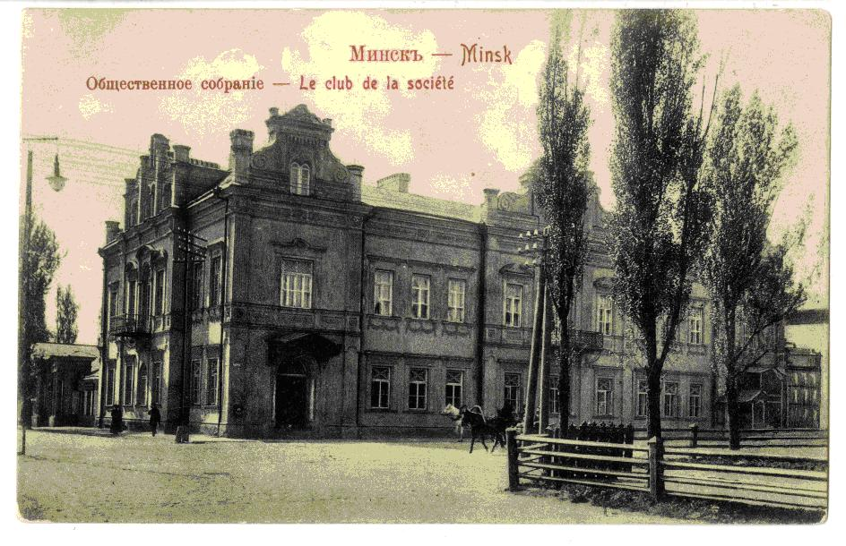
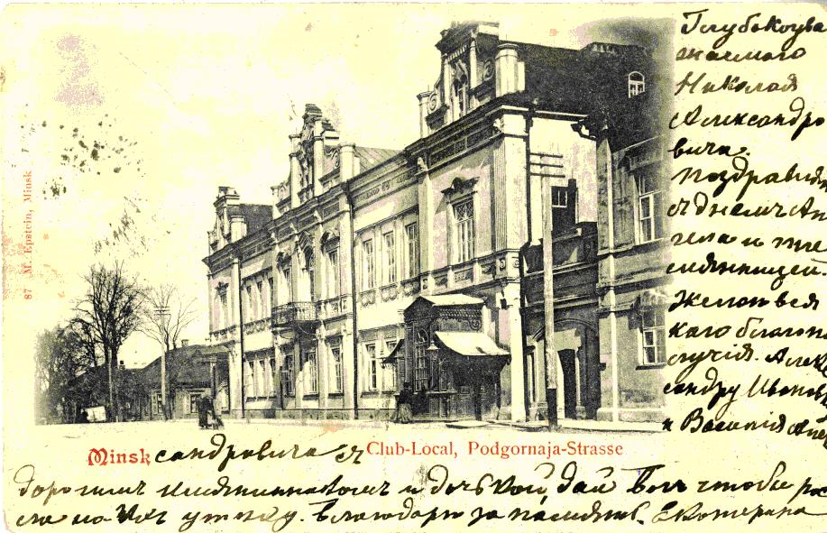
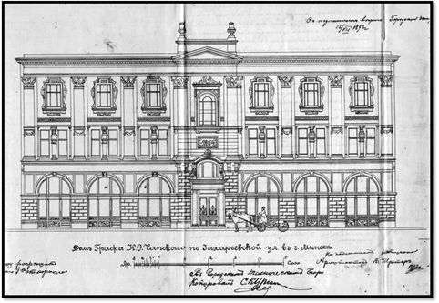
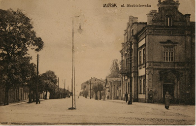

Найбольш вядомы палац графа Караля фон Гутэн-Чапскага быў на рагу вуліц
Чырвонаармейскай (былой Скобелеўскай) і Карла Маркса (былой Падгорнай). Гэты
будынак з барочным арнаментам быў узведзены ў 1857 годзе мінскім краязнаўцам і
калекцыянерам Міхаілам фон Гаусманам.
Галава горада Мінска выкупіў гэты прыгожы палац. Ён быў не толькі жылым
будынкам. Тут месціўся Грамадскі сход, які з’яўляўся органам губернскага
дваранства, абараняў інтарэсы і прывілеі патомных дваран, меў права выбіраць
губернскага кіраўніка дваранства, сябраў дваранскага дэпутацкага сходу, засядацеляў
дваранскага апякунства, ганаровых апекуноў гімназій, прагімназій і г. д. У зале
Грамадскага сходу адбываліся канцэрты, тэатральныя спектаклі, ладзіліся гарадскія
навагоднія ёлкі, дабрачынныя танцавальныя вечары на карысць бедных слухачоў
вышэйшых навучальных устаноў, якія атрымлівалі сярэднюю адукацыю ў Мінску.
Тут пачынала сваю дзейнасць Мінскае таварыства аматараў прыгожых мастацтваў
(1898-1899). У палацы графа Караля фон Гутэн-Чапскага з 1895 года размяшчалася і
Мінскае гарадское пазыковае таварыства. Гарадская Дума выдзеліла на яго патрэбы
50 тысяч рублёў. Таварыства забяспечвала кліентаў доўгатэрміновымі пазыкамі пад
заклад гарадскіх будынкаў і зямлі, стымулюючы такім чынам жыллёвае будаўніцтва.
Палац быў знесены падчас узвядзення будынка былога ЦК КПБ.



